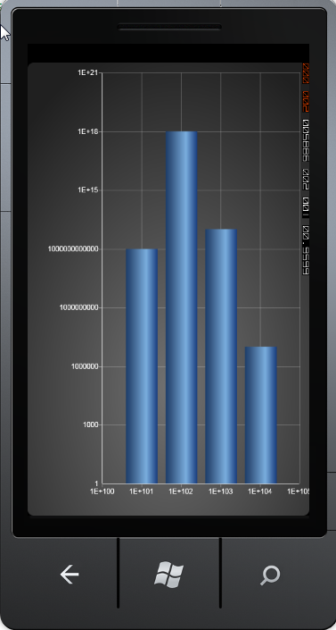

Essential Chart Windows Phone now allows you to add logarithmic values for chart WindowsPhone.
Adding Logarithmic Values for Chart WindowsPhone
Add logarithmic values for chart WindowsPhone, by using the following code:
|
[Xaml]
<syncfusion:ChartArea.PrimaryAxis> <syncfusion:ChartAxis IsAutoSetRange="True" IsLogarithmic="True" IsLogarithmicLabels="True" LogarithmicBase="10"/> </syncfusion:ChartArea.PrimaryAxis>
<syncfusion:ChartArea.SecondaryAxis> <syncfusion:ChartAxis IsAutoSetRange="True" IsLogarithmic="True" IsLogarithmicLabels="True" LogarithmicBase="10"/> </syncfusion:ChartArea.SecondaryAxis> |
|
[C#]
MyChart.Areas[0].PrimaryAxis.IsLogarithmic = true; MyChart.Areas[0].PrimaryAxis.LogarithmicBase = Math.E; MyChart.Areas[0].PrimaryAxis.IsLogarithmicLabels = true;
MyChart.Areas[0].SecondaryAxis.IsLogarithmic = true; MyChart.Areas[0].SecondaryAxis.LogarithmicBase = 10; MyChart.Areas[0].SecondaryAxis.IsLogarithmicLabels = true; |
When the code runs, the following output displays.

Figure 102 : Logarithmic Values
The following table contains the property details of the table:
|
Name of the Property |
Description |
Type of Property |
Value It Returns |
|
IsLogarithmic |
Checks if the logarithmic is set or not |
Dependency Property |
Bool |
|
LogarithmicBase |
Gets the base for the Logarithm |
Dependency Property |
Double |
|
IsLogarithmicLabels |
Checks if the logarithmic labels need to be added |
Dependency Property |
Bool |